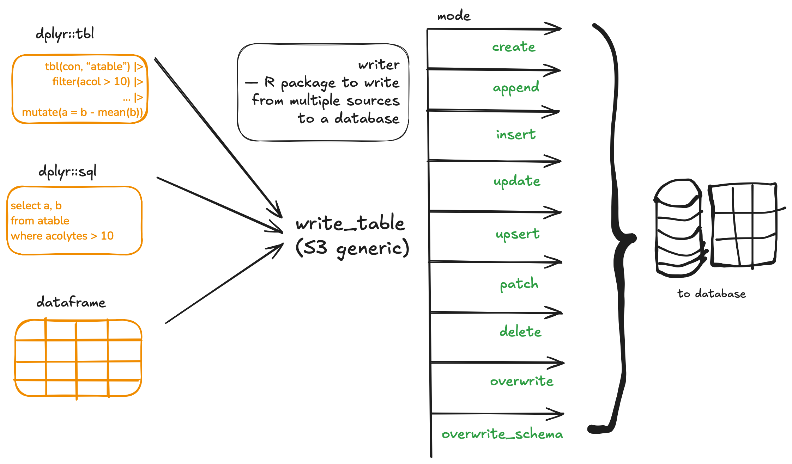

writer package provides unified syntax to write data from lazy dplyr tbl or dplyr sql query or a dataframe to a database table with modes such as create, append, insert, update, upsert, patch, delete, overwrite, overwrite_schema.

Installation
install.packages("writer")
remotes::install("talegari/writer")